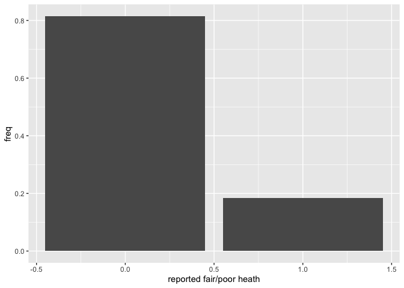
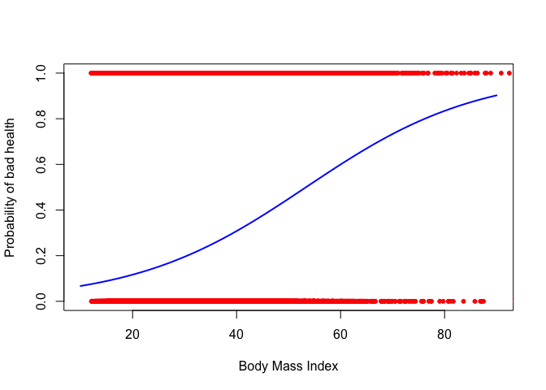
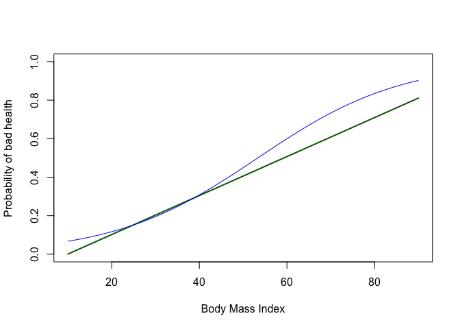
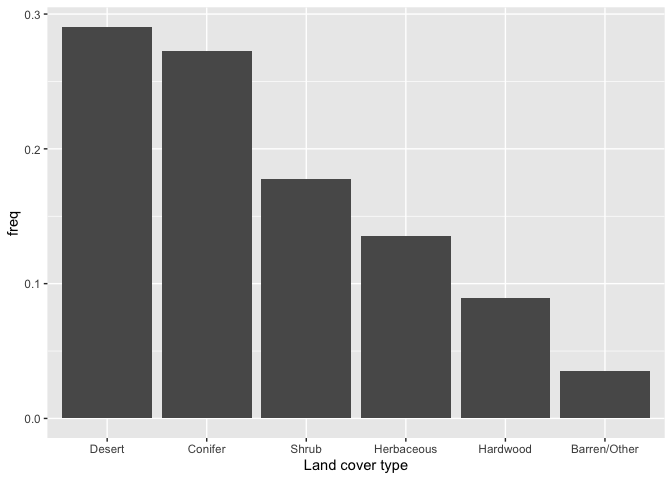
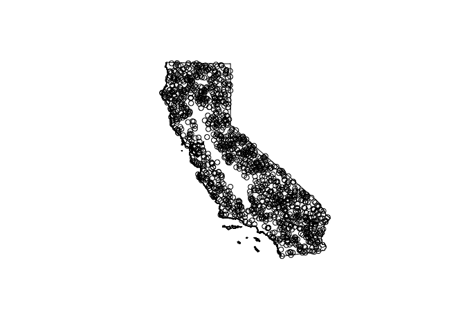

Classification
GEO 200CN - Quantitative Geography
Professor Noli Brazil
Spring 2020
In this lab guide you will learn how to run methods that predict a binary or categorical variable. Predicting a qualitative response for an observation can be referred to as classifying that observation, since it involves assigning the observation to a category, or class. The objectives of this lab are as follows
- Learn how to run a logistic regression
- Learn how to use logistic regression in a prediction framework
- Learn about testing and training your data
- Learn how to run a linear discriminant analysis
- Learn how to run k-nearest neighbor
To help us accomplish these learning objectives, we will examine two cases. The first is to predict individual health status using a set of demographic and socioeconomic characteristics from the Behavioral Risk Factor Surveillance System (BRFSS), an annual survey conducted by the Centers for Disease Control and Prevention that collects state data about U.S. residents regarding their health-related risk behaviors, chronic health conditions, and use of preventive services. The second is to predict land cover (i.e. Desert, Conifer, Hardwood, Herbaceous, and Shrub, ) in California. This guide follows closely ISLR Chapter 4.
Installing and loading packages
We will not be introducing any new packages in this lab. We need to load the following packages.
library(sf)
library(tidyverse)
library(raster)
library(MASS)
library(broom)
library(class)Why classification
First, let’s start with why logistic regression. The reasons why you run a logistic regression are the same as the reasons for running a regular linear regression. However, there is one additional important motivation: we want to model the relationship between a set of independent variables and a binary outcome.
In many situations in your work as a Geographer, your outcome will be of a qualitative nature. When we speak of qualitative outcomes, we generally are concerned with the observation of:
- A particular classification
- Invasive species or not; urban or not
- A particular behavior
- Migrated or not; fire ignition
- A transition
- Riverbank erosion; employed to unemployed;
- A threshold characteristic
- Income below poverty level; concentrations exceeding a particular anthropogenic pollution threshold
In general, each of these outcomes would be coded as a binary variable (1 or 0). You can use a linear regression to model a binary outcome, but you’ll typically break the assumption of homescedastic residuals and you may get predictions outside of 1 or 0. That’s why you’ll need to turn to logistic regression to model the relationship.
Now, why k-nearest neighbors (KNN) and linear discriminant analysis (LDA)? For the same reasons why you run logistic regression, except the response variable is multicategorical and not binary. For example, did not migrate, migrated within a country, migrated outside the country. Furthermore, whereas logistic regression is often used in descriptive and inferential modelling, KNN and LDA are strictly prediction methods.
Logistic Regression
We will use the BRFSS data set to learn how to run logistic regressions in R. Our research question is: What individual characteristics predict self-reported bad health among U.S. adults? We are classifying people into bad health (Y = 1) and not bad health (Y = 0) categories.
Bring in the data
Download the zipped file classification.zip from Canvas. It contains all the files that will be used in this guide. The data are also located on Canvas in the Lab and Assignments Week 8 folder. Bring in the file brfss16.csv
brfss16 <- read_csv("brfss16.csv")The data contain individuals as units of observations. The main goal of the analysis is to examine characteristics that are associated with self-reported bad health, where bad health is an indicator of whether the respondent reported “yes” to the question: “In general, would you say that in general your health is Fair/Poor?” Our dependent variable is badhealth and our independent variables are age agec, gender male, educational attainment educ, race/ethnicity race_eth, whether the individual indicates they smoke, employment status employ, marital status marst, body mass index bmi and income inc. A record layout of the data can be found here
Simple Logistic Regression
We first examine the distribution of our binary dependent variable badhealth. We create a bar chart showing the distribution of the poor health indicator.
brfss16 %>%
group_by(badhealth) %>%
summarize (n = n()) %>%
mutate(freq = n / sum(n)) %>%
ggplot() +
geom_bar(mapping=aes(x=badhealth, y=freq),stat="identity") +
xlab("reported fair/poor heath")
Let’s now run a logistic regression model. We’ll start simple, regressing badhealth on BMI. Instead of using the function lm() to run a logistic regression model as we did when running linear regression models, we will use the function glm(), which stands for Generalized Linear Models. glm() is similar to lm(), but gives us the option of a variety of families to use in fitting the model (the shape that we hypothesis represents the shape of f that defines the relationship between Y and X).
We specify a family by using the argument family =. If we wanted a standard linear regression, which assumes a normal distribution, family will equal gaussian (fancy word for normal). For a list of glm families, check the help documentation ? glm. We use family = binomial for a logistic regression.
logit1.fit <- glm(badhealth ~ bmi, family = binomial, data = brfss16)We can summarize the modelling results using summary(). The resulting output is very similar to the output from lm().
summary(logit1.fit)##
## Call:
## glm(formula = badhealth ~ bmi, family = binomial, data = brfss16)
##
## Deviance Residuals:
## Min 1Q Median 3Q Max
## -2.3613 -0.6505 -0.5836 -0.5129 2.2744
##
## Coefficients:
## Estimate Std. Error z value Pr(>|z|)
## (Intercept) -3.2376333 0.0194056 -166.84 <2e-16 ***
## bmi 0.0606889 0.0006407 94.72 <2e-16 ***
## ---
## Signif. codes: 0 '***' 0.001 '**' 0.01 '*' 0.05 '.' 0.1 ' ' 1
##
## (Dispersion parameter for binomial family taken to be 1)
##
## Null deviance: 352201 on 367872 degrees of freedom
## Residual deviance: 343284 on 367871 degrees of freedom
## AIC: 343288
##
## Number of Fisher Scoring iterations: 4Let’s compare our results to those from an OLS regression model. An OLS for a binary response variable is known as a linear probability model. We use glm() again, but this time use the (default) Gaussian distribution.
ols.fit1 <-glm(badhealth ~ bmi, family = gaussian, data = brfss16)and a summary
summary(ols.fit1)##
## Call:
## glm(formula = badhealth ~ bmi, family = gaussian, data = brfss16)
##
## Deviance Residuals:
## Min 1Q Median 3Q Max
## -0.8942 -0.1984 -0.1586 -0.1122 0.9789
##
## Coefficients:
## Estimate Std. Error t value Pr(>|t|)
## (Intercept) -0.1006501 0.0029346 -34.30 <2e-16 ***
## bmi 0.0101271 0.0001016 99.63 <2e-16 ***
## ---
## Signif. codes: 0 '***' 0.001 '**' 0.01 '*' 0.05 '.' 0.1 ' ' 1
##
## (Dispersion parameter for gaussian family taken to be 0.1467352)
##
## Null deviance: 55436 on 367872 degrees of freedom
## Residual deviance: 53980 on 367871 degrees of freedom
## AIC: 337988
##
## Number of Fisher Scoring iterations: 2You can create a plot like the one showed in ISLR Figure 4.2 (right hand plot) by predicting the probability of reporting bad health for given values of BMI. The minimum and maximum BMI for our data set are 12.09 and 85.82, so let’s predict bad health for BMI between 10 to 90 using the predict() function.
pfit1 <- predict(logit1.fit, bmi = c(10:90))In predicting using a regression model, you can either predict health status for the 367,873 individuals in the original data set or predict for a new set of individuals. In the code above, we are predicting for a new set of observations - individuals with BMIs between 10 and 90 - i.e. 10, 11, 12, 13 … 88, 89, and 90.
Let’s get a summary of our predicted values
summary(pfit1)## Min. 1st Qu. Median Mean 3rd Qu. Max.
## -2.508 -1.782 -1.583 -1.527 -1.342 2.807We get values ranging from -2.5 to 2.8. But, these are not probabilities. Remember, the response variable is modelled as a logit, so R will give us logits in return. To convert the logit to a probability, use the argument type = "response" inside predict()
pfit1 <- predict(logit1.fit, data.frame(bmi = c(10:90)), type = "response")
summary(pfit1)## Min. 1st Qu. Median Mean 3rd Qu. Max.
## 0.06719 0.19514 0.44938 0.46522 0.73314 0.90242The predicted probability of bad health ranges from 6.7% to 90.2%. Let’s plot the result and add the observations
plot(c(10:90), pfit1, type='l', lwd=2, ylab='Probability of bad health', xlab='Body Mass Index', col="blue", ylim = c(0,1))
points(brfss16$bmi, brfss16$badhealth, col='red', pch=20)
This gives us a S-curve like the one shown on Figure 4.2 (right plot) in ISLR. The observed cases are either 0 or 1, but the probability of reporting bad health can be any value in between 0 and 1. Later in this lab, we’ll go through how to convert predictions into 0, 1 status.
Let’s compare our results from those using an OLS regression. Get the predictions.
pfit2 <- predict(ols.fit1, data.frame(bmi = c(10:90)))
summary(pfit2)## Min. 1st Qu. Median Mean 3rd Qu. Max.
## 0.0006207 0.2031624 0.4057041 0.4057041 0.6082458 0.8107875You’ll notice we don’t get values below 0, which is great, but can happen in an OLS, which is why we typically will run a logistic model when dealing with a binary response. Let’s plot and compare to the logistic regression predictions.
plot(c(10:90), pfit2, type='l', lwd=2, ylab='Probability of bad health', xlab='Body Mass Index', col="dark green", ylim = c(0,1))
lines(c(10:90), pfit1, type='l', lwd=1, col='blue')
So, predictions with OLS are not that different in this case, but they need to be ‘fixed’ to avoid impossible probabilities (and the notion of OLS is simply less consistent with the data).
Multiple Logistic Regression
We now move to the multiple regression framework by adding more than one independent variable.
logit2.fit <- glm(badhealth ~ bmi + race_eth + agec + male + smoke + educ + inc + employ + marst , family = binomial, data = brfss16)
summary(logit2.fit)##
## Call:
## glm(formula = badhealth ~ bmi + race_eth + agec + male + smoke +
## educ + inc + employ + marst, family = binomial, data = brfss16)
##
## Deviance Residuals:
## Min 1Q Median 3Q Max
## -2.8349 -0.5762 -0.3993 -0.2630 3.0324
##
## Coefficients:
## Estimate Std. Error z value Pr(>|z|)
## (Intercept) -1.8010100 0.0541548 -33.257 < 2e-16 ***
## bmi 0.0543752 0.0007469 72.803 < 2e-16 ***
## race_ethnh black -0.3876041 0.0229362 -16.899 < 2e-16 ***
## race_ethnh multirace -0.1077166 0.0353970 -3.043 0.002342 **
## race_ethnh other -0.2146632 0.0283361 -7.576 3.57e-14 ***
## race_ethnhwhite -0.4762336 0.0177416 -26.843 < 2e-16 ***
## agec(24,39] 0.3269027 0.0343055 9.529 < 2e-16 ***
## agec(39,59] 0.7822065 0.0334021 23.418 < 2e-16 ***
## agec(59,79] 0.9265007 0.0345235 26.837 < 2e-16 ***
## agec(79,99] 1.2753285 0.0382207 33.368 < 2e-16 ***
## maleMale 0.0900517 0.0102216 8.810 < 2e-16 ***
## smokeFormer -0.3054767 0.0143742 -21.252 < 2e-16 ***
## smokeNeverSmoked -0.6204758 0.0137012 -45.286 < 2e-16 ***
## educ1somehs -0.2881217 0.0314044 -9.175 < 2e-16 ***
## educ2hsgrad -0.6060178 0.0276591 -21.910 < 2e-16 ***
## educ3somecol -0.7376407 0.0281473 -26.206 < 2e-16 ***
## educ4colgrad -1.0347930 0.0289085 -35.795 < 2e-16 ***
## inc -0.2841911 0.0041210 -68.962 < 2e-16 ***
## employnilf 0.5243874 0.0165812 31.625 < 2e-16 ***
## employretired 0.6106996 0.0148012 41.260 < 2e-16 ***
## employunable 2.1122045 0.0171316 123.293 < 2e-16 ***
## marstdivorced -0.0413071 0.0310349 -1.331 0.183193
## marstmarried -0.0880994 0.0296390 -2.972 0.002955 **
## marstnm -0.1453255 0.0312468 -4.651 3.31e-06 ***
## marstseparated 0.1467940 0.0403901 3.634 0.000279 ***
## marstwidowed -0.1404715 0.0322379 -4.357 1.32e-05 ***
## ---
## Signif. codes: 0 '***' 0.001 '**' 0.01 '*' 0.05 '.' 0.1 ' ' 1
##
## (Dispersion parameter for binomial family taken to be 1)
##
## Null deviance: 352201 on 367872 degrees of freedom
## Residual deviance: 279929 on 367847 degrees of freedom
## AIC: 279981
##
## Number of Fisher Scoring iterations: 5Let’s also run a multiple OLS regression model. We’ll need this for later.
ols.fit2 <- glm(badhealth ~ bmi + race_eth + agec + male + smoke + educ + inc + employ + marst , family = gaussian, data = brfss16)Classification
As we discussed in lecture, we’re now entering the phase of the class where we go from using models and methods to describe and infer to those that predict. In the case of logistic regression, or any model that has a non-numeric response variable, prediction is about classification, which you read about in ISLR Ch. 4. In the classification (or prediction) world, we’re primarily concerned about the quality of our predictions rather than trying to describe a relationship or infer causality. In other words, we create a model to predict a phenomena and then test whether our model does a good job of predicting that phenomena.
A simple approach to assessing the prediction quality of a model is to examine a confusion matrix (see page 145 in ISRL). In practice, a binary classifier can make two types of errors: it can incorrectly assign an individual who is in bad health, or it can incorrectly assign an individual who is not in bad health. A confusion matrix is a convenient way of displaying this information.
First, let’s predict the probability of reporting bad health for the 367,873 observations in our original data.
pfit3 <- predict(logit2.fit, type = "response")We used the predict() function before when we predicted bad health using BMIs between 10 and 90. Here, we are not predicting for a new set of observations, but rather for our original 367,873 observations. In other words, pfit3 contains the fitted values based on the model logit2.fit.
Remember that our original variable is a 0, 1 variable - “not bad health”, “bad health.” So, we now need to convert the probabilities into one of these categories. What is typically done is if the predicted probability is greater than 0.5, designate it a 1 (“bad health”). We do so in the following code using the ifelse() command. We save the classification back into the data set using mutate().
brfss16 <- mutate(brfss16, pprob = pfit3, pclass = ifelse(pprob > 0.5, 1, 0))The first argument in the mutate command saves the vector of predicted probabilities. The second argument creates a variable that transforms to 1 all of the probabilities that are greater than 0.5. We then use the table() function to produce a confusion matrix
table(brfss16$pclass, brfss16$badhealth)##
## 0 1
## 0 290051 48782
## 1 9813 19227The diagonal elements of the confusion matrix indicate correct predictions, while the off-diagonals represent incorrect predictions. Hence our model correctly predicted non bad health status for 290,051 persons and bad health status for 19,227 persons, for a total of 309,278 correct predictions. In this case, logistic regression correctly predicted the health status of 84.1% individuals.
Question 1: Create the confusion matrix for the OLS model ols.fit2. Does the OLS model do a better job predicting health status than the logistic regression model?
Training and Testing
It looks like our model does a good job predicting bad health status. However, the results are misleading because we trained and tested the model on the same set of 367,873 observations. In other words, 100 - 84.1 = 15.9 is the training error rate. The training error rate is typically overly optimistic - it tends to underestimate the test error rate
In order to better assess the accuracy of the logistic regression model, we can fit the model using new data. We can do this two ways. First, we can use (or train) part of the original data to create our model, and then examine how well it predicts the held out (test) data. This will yield a more realistic error rate, in the sense that in practice we will be interested in our model’s performance not on the data that we used to fit the model.
We’ll first need to get a sample of the original data to train on. How much to sample? The literature is not clear. Let’s set aside 25% of the data to test, and train the rest. We use the the tidy friendly sample_frac() to sample 75% of the data to train. We use seed.set() to give us a pseudorandom set of numbers to replicate the results.
set.seed(1234)
brfss16$id <- 1:nrow(brfss16)
#75% of data are used to train the model
train <- brfss16 %>% dplyr::sample_frac(.75)
#25% of data are used to test the model predictions
test <- anti_join(brfss16, train, by = 'id')Now run the model on the training data set
logit4.fit <- glm(badhealth ~ bmi + race_eth + agec + male + smoke + educ + inc + employ + marst , family = binomial, data = train)Take a looksie at the results
summary(logit4.fit)##
## Call:
## glm(formula = badhealth ~ bmi + race_eth + agec + male + smoke +
## educ + inc + employ + marst, family = binomial, data = train)
##
## Deviance Residuals:
## Min 1Q Median 3Q Max
## -2.8366 -0.5776 -0.3996 -0.2626 3.0449
##
## Coefficients:
## Estimate Std. Error z value Pr(>|z|)
## (Intercept) -1.878760 0.062852 -29.892 < 2e-16 ***
## bmi 0.054633 0.000863 63.304 < 2e-16 ***
## race_ethnh black -0.414729 0.026493 -15.654 < 2e-16 ***
## race_ethnh multirace -0.104400 0.040498 -2.578 0.009940 **
## race_ethnh other -0.247123 0.032811 -7.532 5.01e-14 ***
## race_ethnhwhite -0.485699 0.020462 -23.736 < 2e-16 ***
## agec(24,39] 0.366907 0.040023 9.167 < 2e-16 ***
## agec(39,59] 0.823166 0.038986 21.114 < 2e-16 ***
## agec(59,79] 0.959662 0.040258 23.838 < 2e-16 ***
## agec(79,99] 1.312480 0.044473 29.512 < 2e-16 ***
## maleMale 0.092994 0.011796 7.883 3.19e-15 ***
## smokeFormer -0.308237 0.016591 -18.579 < 2e-16 ***
## smokeNeverSmoked -0.609946 0.015802 -38.599 < 2e-16 ***
## educ1somehs -0.267665 0.036181 -7.398 1.38e-13 ***
## educ2hsgrad -0.598346 0.031903 -18.755 < 2e-16 ***
## educ3somecol -0.720753 0.032464 -22.202 < 2e-16 ***
## educ4colgrad -1.028077 0.033348 -30.829 < 2e-16 ***
## inc -0.279518 0.004751 -58.831 < 2e-16 ***
## employnilf 0.539075 0.019129 28.182 < 2e-16 ***
## employretired 0.629023 0.017071 36.847 < 2e-16 ***
## employunable 2.127378 0.019817 107.353 < 2e-16 ***
## marstdivorced -0.025365 0.035883 -0.707 0.479631
## marstmarried -0.086159 0.034296 -2.512 0.011998 *
## marstnm -0.141429 0.036171 -3.910 9.23e-05 ***
## marstseparated 0.143162 0.046700 3.066 0.002172 **
## marstwidowed -0.134139 0.037267 -3.599 0.000319 ***
## ---
## Signif. codes: 0 '***' 0.001 '**' 0.01 '*' 0.05 '.' 0.1 ' ' 1
##
## (Dispersion parameter for binomial family taken to be 1)
##
## Null deviance: 264392 on 275904 degrees of freedom
## Residual deviance: 210224 on 275879 degrees of freedom
## AIC: 210276
##
## Number of Fisher Scoring iterations: 5Then predict probabilities using the test data set by using the argument newdata =
pfit4 <- predict(logit4.fit, newdata = test, type = "response")Confusion matrix time.
test <- mutate(test, pprob = pfit4, pclass = ifelse(pprob > 0.5, 1, 0))table(test$pclass, test$badhealth)##
## 0 1
## 0 72579 12068
## 1 2468 4853The test error rate is 15.8, not far from the 15.9 training error rate calculated above.
The second way to test the predictive quality of your model is to model past data to predict future data. The file brfss17.csv contains individual data from the the 2017 version of the BRFSS. The data file contains the same exact variables as the 2016 file you have been using in this lab.
Question 2: Calculate the test error rate using the 2017 BRFSS data.
Linear Discriminant Analysis
Another popular classification method is Linear Discriminant Analysis (LDA). ISLR on page 138 outlines three reasons why we might use LDA over logistic regression.
We fit an LDA model on the training data using the lda() function, which is a part of the MASS package. The function arguments are the same as lm().
lda.fit1 <- lda(badhealth ~ bmi + race_eth + agec + male + smoke + educ + inc + employ + marst , data = train)You can get the predictions using the predict() function as before, but without the type = "response" argument.
lda.pred <- predict(lda.fit1, newdata = test)
names(lda.pred)## [1] "class" "posterior" "x"The predict() function returns a list with three elements. The first element, class, contains LDA’s predictions. Unlike with logistic regression, we don’t need to convert probabilities into 0 or 1. We can save these predictions back into test like we did with the logistic regression predictions.
test <- mutate(test, pclasslda = lda.pred$class)Question 3: Create the confusion matrix for the LDA predictions. What is the test error rate? Which of the methods - Logistic or LDA - appears to provide the best results using the test data?
More than two classes
Logistic regression is a popular classification method. However, it is primarily used when the response variable represents two classes. When dealing with a classification problem when the number of classes is > 2, we can use LDA. To demonstrate this, we’ll use another data set that contains a response variable with multiple categories.
Bring in the data set landuse.csv, which contains sampled land cover in California. The research purpose is to predict land cover everywhere in the state.
s <- read_csv("landuse.csv")What land cover do we have?
#basic table
table(s$whr)##
## Barren/Other Conifer Desert Hardwood Herbaceous Shrub
## 43 335 357 110 166 218Bar chart it using our bud ggplot(). Use the reorder() function to sort descending.
s %>%
group_by(whr) %>%
summarize (n = n()) %>%
mutate(freq = n / sum(n)) %>%
ggplot() +
geom_bar(mapping=aes(x=reorder(whr, -freq), y=freq),stat="identity") +
xlab("Land cover type")
We removed the human dominated land cover (urban and agriculture), and also water and wetland because you would need additional predictors to adequately model these. In our case, we only have two variables to predict land cover, temperature and precipitation.
Let’s bring in a California boundary shapefile and plot the points just to see where we’ve sampled. We’ll use the function shapefile() from the raster package
ca <- shapefile("caboundary.shp")plot(ca)
points(s)
Let’s now run an LDA to classify land cover. First, let’s set aside 20% of the data to test the model.
set.seed(1234)
s$id <- 1:nrow(s)
test.ca <- s %>% dplyr::sample_frac(.20)
train.ca <- anti_join(s, test, by = 'id')Run the LDA model using the variables temperature and precipitation to predict land cover whr.
lda.fit <- lda(whr ~ temperature + precipitation, data=train.ca)
lda.fit## Call:
## lda(whr ~ temperature + precipitation, data = train.ca)
##
## Prior probabilities of groups:
## Barren/Other Conifer Desert Hardwood Herbaceous Shrub
## 0.03296703 0.26153846 0.28901099 0.08681319 0.14395604 0.18571429
##
## Group means:
## temperature precipitation
## Barren/Other 7.693228 625.5228
## Conifer 8.564588 957.0210
## Desert 18.204348 146.4718
## Hardwood 13.317387 871.3709
## Herbaceous 15.034421 498.1135
## Shrub 10.763365 556.5721
##
## Coefficients of linear discriminants:
## LD1 LD2
## temperature 0.206009122 -0.211716179
## precipitation -0.002272605 -0.002651902
##
## Proportion of trace:
## LD1 LD2
## 0.9342 0.0658Question 4: What is the test error rate of the LDA model?
Question 5: Which class (Desert, Hardwood, etc.) does the model seem to predict well, and which class not?
K-Nearest Neighbor
Another popular classification method is K-Nearest Neighbors (KNN). We can use KNN to predict two or more classes. ISLR discusses the KNN method on page 39.
To run KNN in R, use the function knn(), which is a part of the class package. This function works rather differently from lm() and glm(). Rather than a two-step approach in which we first fit the model and then we use the model to make predictions, knn() forms predictions using a single command.
The function requires four inputs. First, the predictor variables from the training data. Then the predictor variables from the test data. Third, the dependent variable Y from the training data. Finally, the value of K, the number of nearest neighbors to be used by the classifier. Note that knn() only takes numeric variables, which means if you use categorical predictors, you will need to convert them into a set of dummy variables.
Let’s first create the training and test data containing just the predictor variables.
knn.train<- dplyr::select(train.ca, temperature, precipitation)
knn.test<- dplyr::select(test.ca, temperature, precipitation)Next, we pull the dependent variable from the training data set. The knn() function expects us to provide the class labels as a vector rather than a data frame, which we can specify by adding .$whr to the end of our dplyr chain:
train.class <- dplyr::select(train.ca, whr) %>%
.$whrWe set a random seed before we apply knn() because if several observations are tied as nearest neighbors, then R will randomly break the tie. Therefore, a seed must be set in order to ensure reproducibility of results. The default K is 1, but let’s follow the example in the ISLR textbook and use K = 3.
set.seed(1234)
knn.pred<-knn(knn.train, knn.test, train.class, k =3)knn.pred holds the predicted classes of the test observations.
Question 6: What is the overall test error rate for the K-nearest neighbor predictions? What are the test error rates by class?
Bonus Question: Use a for loop that tests different values of K to find the value of K that produces the lowest overall test error rate. Make a graph that plots the overall test error rate on the y-axis and the K value on the x-axis.

This work is licensed under a Creative Commons Attribution-NonCommercial 4.0 International License.
Website created and maintained by Noli Brazil